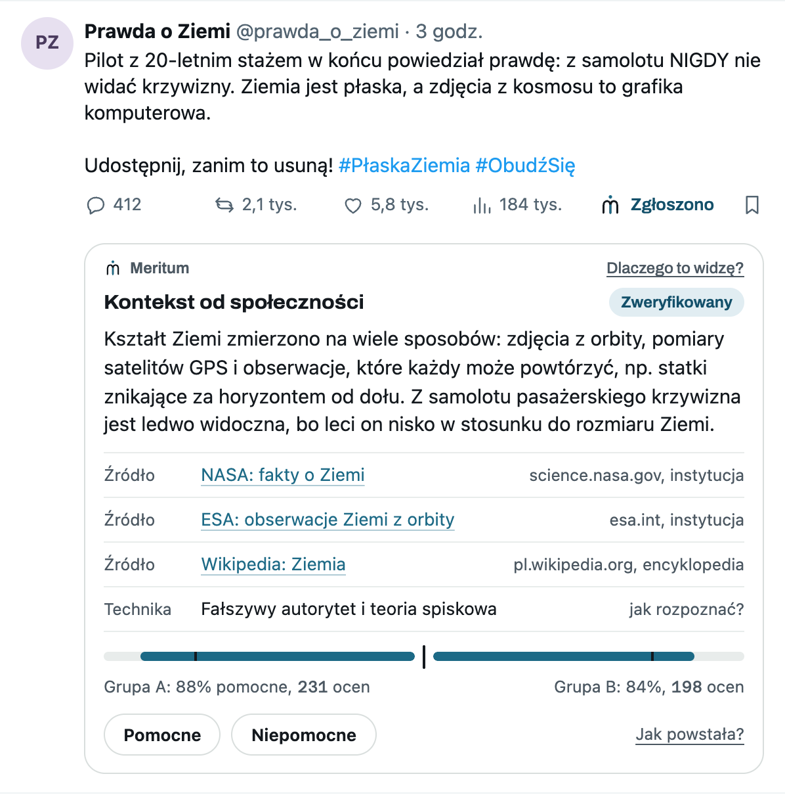
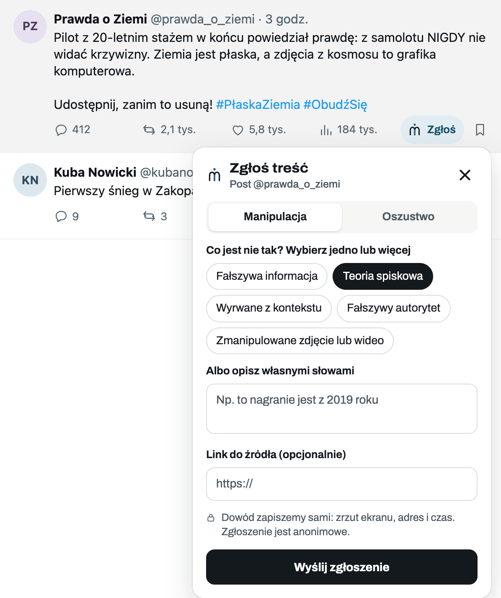
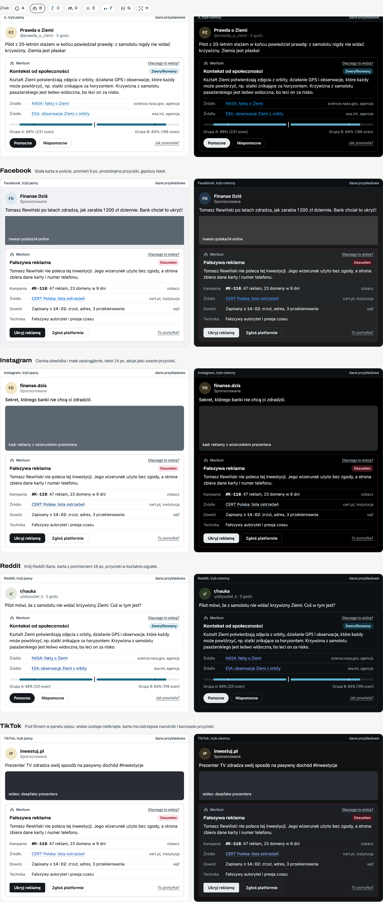
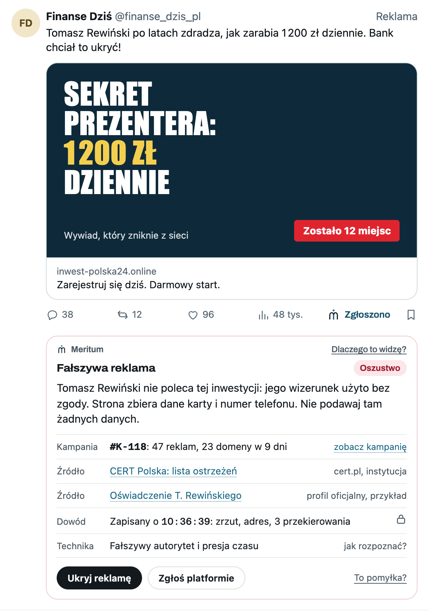

Jeden fejk, cała kampania. Jeden kontekst, ponad podziałami.

Fakt-check jest gdzieś w sieci, ale nie tam, gdzie ludzie czytają
| Dezinformacja (MSZ „Prawdowid”) | Fałszywe reklamy (NASK „Kolekcjoner fejków”) | |
|---|---|---|
| Zagrożenie | manipulacja, fałszywe narracje | reklamy z wizerunkiem znanych osób użytym bez zgody |
| Co utrudnia | nadmiar informacji, brak wiarygodnych źródeł | szybko znikają, wracają pod nowymi adresami |
| Czego brakuje | narzędzia do świadomej oceny treści | szerszego obrazu: jeden materiał to fragment kampanii |
Jeden fejk, cała kampania
Farma botów forsująca fałszywą narrację i sieć domen rotująca reklamy z deepfake'iem działają tak samo: wiele kopii, krótkie życie, skoordynowane konta. Dlatego budujemy jeden silnik.
- 1Zbiera
zgłoszenia i ślady: zrzut, adres, przekierowania, czas
- 2Łączy
okazy w kampanie po obrazie, tekście, szablonie strony i domenach
- 3Wyjaśnia
co widzisz, ze źródłami i nazwą techniki manipulacji
- 4Chroni
przed kliknięciem i przed manipulacją głosowaniem
Trzy kliknięcia od zgłoszenia do notatki


Notatka wychodzi, gdy zgodzą się obie strony
- 1
AI pisze szkic z uwag użytkowników i źródeł.
- 2
Oceniają go dwie grupy, które zwykle oceniają inaczej.
- 3
Publikacja dopiero, gdy obie przekroczą próg 70% ocen „pomocne”.
- 4
Większość nie wystarcza, więc farma botów nie przepchnie notatki.
Dane symulowane. Kreska na każdym pasku to próg 70%.
Jedno zgłoszenie, cała kampania #K-118

Dane symulowane. Prezenter „Tomasz Rewiński” i wszystkie domeny są fikcyjne.
Atak odparty, notatka bez zmian
Klaster 312 kont głosuje na notatkę #N-2291 od 14:32. Żaden z jego głosów nie trafił do konsensusu.
| Czas | Odrzucone konto | Powód |
|---|---|---|
| 14:41 | @pl_patriot_88231 | ten sam klaster |
| 14:41 | @glos_ludu_4410 | rytm 1 głos/s |
| 14:40 | @marek_k_20931 | konto ma 2 dni |
| 14:39 | @prawda_tv_7781 | ten sam klaster |
| 14:38 | @ania_m_55102 | konto ma 2 dni |
Dane symulowane. Wszystkie nazwy kont są wymyślone.
Działa dziś, skaluje się jutro
zgłoszenie, notatka, ostrzeżenie, sejf dowodów
React, TanStack: kampanie i ataki na żywo
serwer MCP (FastMCP): „czy ta domena należy do kampanii?”
otwarte API: notatki, konsensus, kampanie
szkic notatki ze źródłami; nie decyduje o publikacji
trwałe przepływy; demo odtwarzane bez internetu
graf kampanii: podobieństwo obrazu, tekstu, szablonu strony, domen
GCP (aplikacja i baza) + Cloudflare (ruch, ochrona API)
Zespół i czego potrzebujemy
Zespół
- [Imię Nazwisko]backend, API, DBOS
- [Imię Nazwisko]AI i graf kampanii
- [Imię Nazwisko]wtyczka i panel
- [Imię Nazwisko]projekt i pitch
Prośba
- Pilotaż z redakcją lub uczelnią: pierwsi użytkownicy API i serwera MCP.
- Dostęp do listy ostrzeżeń: gotowe do integracji z CERT Polska.
- Konsultacja prawna: RODO, wizerunek i status zaufanego podmiotu sygnalizującego z DSA.
Jeden fejk, cała kampania. Jeden kontekst, ponad podziałami.
AI pisze. Ludzie decydują. Źródła są obowiązkowe.